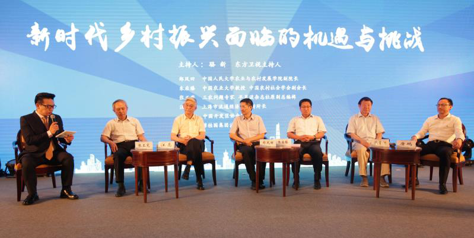
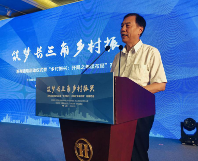
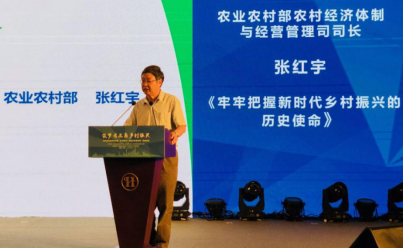
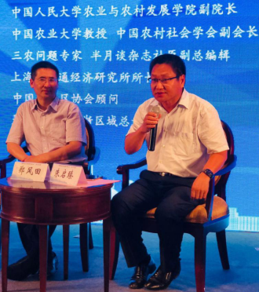
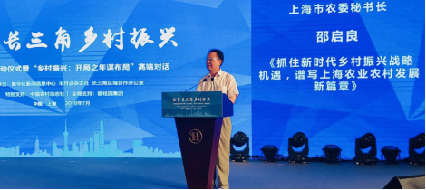
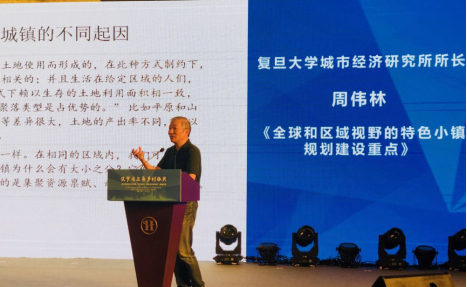
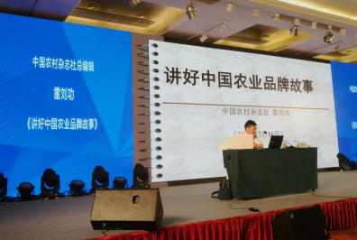

商务合作 QQ:340833389
抖音:28637558005  意见反馈
意见反馈
-
-
长三角一体化发展步入快车道 助推乡村振兴战略全面实施长三角经济圈解题“乡村振兴”
2018年7月10日至7月12日，由新华社新闻信息中心、半月谈杂志社、长三角区域办公室联合主办、中国农村杂志社特别支持、碧桂园集团全程支持的“筑梦长三角乡村振兴”系列活动在沪举办。10日上午，来自上海、浙江、江苏、安徽等地100余名相关领导、专家学者、企业代表及乡镇干部参加培训会启动仪式，围绕“长三角乡村振兴”展开高端对话。随后，7位专家为乡镇干部就乡村振兴7个重难点问题进行了深入的专题培训，为长三角地区推进乡村振兴把脉问诊、建言献策。

实施国家战略 乡村发展迎来新机遇

原农业部常务副部长尹成杰在启动仪式主旨发言中指出，乡村振兴战略是新时代“三农”工作重要指导思想，是做好新时代“三农”工作的总抓手。当前，我国进入新时代的主要矛盾发生了根本性转变，是人们日益增长的美好生活需求同发展不平衡不充分的矛盾。最大的发展不平衡不充分是城乡发展不平衡，农业发展不充分，最大的薄弱是农业农村“两个现代化”滞后。实施乡村振兴战略，是解决发展不平衡不充分这个主要矛盾的战略性举措。实施乡村振兴战略关键是把握好乡村振兴的总体要求和路径方向，要增强乡村振兴的统筹性、全面性和协调性，提高乡村振兴的效率和质量，以新的发展理念为指导，构建新机制，搭建新平台，培育新业态，形成新动能。

农业农村部农村经济体制与经营管理司司长张红宇主旨演讲时强调，要在农村教育、医疗救助、社会保障等公共服务供给方面实现无差别对待，确保城乡工农均衡发展。乡村振兴的深远意义就在于以此为契机，彻底解决中国长期存在的城乡二元体制机制矛盾，推动融合发展，共同富裕。中国的乡村振兴道路不同于世界任何其他国家，中国在乡村振兴道路上探索，应该为东南亚甚至全世界作出乡村发展模式借鉴。

在启动仪式圆桌讨论中，中国人民大学农业与农村发展学院副院长郑风田表示，我国振兴乡村的方向是非常正确的，怎样将农民组织起来是一个关键点。以韩国为例，他们会加入“韩国农协”，我国也可以考虑完善相应的保障制度。中国农业大学朱启臻教授表示，乡村振兴要以农民为主体，农民自主经营的项目，他们会更上心，更投入。
对于如何加强顶层设计，走出中国特色的乡村振兴道路，发展区域特色的乡村经济，与会专家也纷纷献言献策。
长三角一体化步入快车道 助推乡村振兴
长三角地区是我国经济最具活力、开放程度最高、创新能力最强的区域之一，是“一带一路”与长江经济带的重要交汇地带，在国家现代化建设大局和开放格局中具有举足轻重的战略地位。长三角各地合作由来已久。多年来，在沪苏浙皖和有关部门的共同努力下，长三角一体化发展不断取得新成效，各方面呈现良好态势。长三角区域乡村发展的联动合作也早已启动。前段时间，浙江嘉兴与上海青浦签订战略框架协议，江苏苏州与上海嘉定签订战略框架协议。在上海金山与浙江交界的毗邻地区，在昆山与上海交界地区，一系列如超大型长三角“田园综合体”的“跨界”探索和实践，也已悄然展开。

作为国际大都市，上海正在重新发现乡村的价值，根据上海的区域特色，加快发展现代都市农业。上海市农委秘书长邵启良在发言中表示，在全面实施乡村振兴战略的背景下，上海提出了重新发现农村价值的重大课题，将积极用好上海广袤的农村地带，发展都市农业。加大城乡统筹力度，实现医疗、养老等公共服务的城乡一体化，全面改造郊区小村镇，改善农村人居环境。

复旦大学城市经济研究所所长周伟林则以浙江省为例，详解了长三角特色小镇应因地制宜布局规划，并指出目前特色小城镇正在重新定位。例如：以特色块状经济为支撑的特色产业和工贸重镇;与大城市毗邻、以最佳人居为特色的卫星城镇;以贸工农一体化农业为特色的资源禀赋小城镇;历史文化、旅游型特色小城镇等。
培训带头人 为乡村振兴提供人才保障
国家战略、区域优势为长三角经济圈的乡村发展提供了有力保障，而乡村要发展好，必须要有好班子和带头人。基层干部服务在乡村振兴一线，是落实乡村振兴战略的前沿动力和中坚力量。“筑梦长三角乡村振兴”专题培训，正是为长三角乡村振兴提供人才保障所做的一次努力。乡镇干部通过学理论、学政策、学经验，进一步深刻把握实施乡村振兴战略的精神实质和方法途径，切实推动长三角“三农”工作。

专题培训中农业农村部农村经济体制与经营管理司司长张红宇讲解中国现代农业经营体系构建路径，中国人民大学农业与农村发展学院副院长郑风田讲解如何培养新农人，中国农村杂志社总编辑雷刘功讲解讲好中国农业品牌故事，中国农业大学朱启臻教授讲解如何挖掘乡村自有价值，中央党校三农问题专家曾业松讲解统筹城乡融合的有效路径，上海社会科学院副院长王振讲解长三角区域合作，碧桂园集团助理总裁罗劲荣分享企业实践经验。专题教学深入浅出，顶层设计与实施路径并存，理论与实践有效结合，帮助乡镇党政干部拓宽视野、启迪工作思路。
本次活动由碧桂园集团全程支持。作为中国住房城乡建设领域的企业龙头，多年来，碧桂园积极探索产业扶贫、健康扶贫、教育扶贫等造血模式，推动城乡融合发展，迄今已陆续开展多个绿色产业项目和新农村示范村建设项目。
-